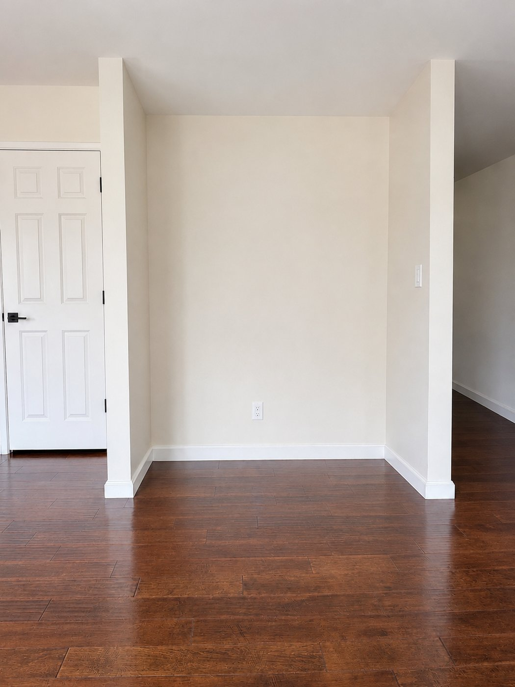
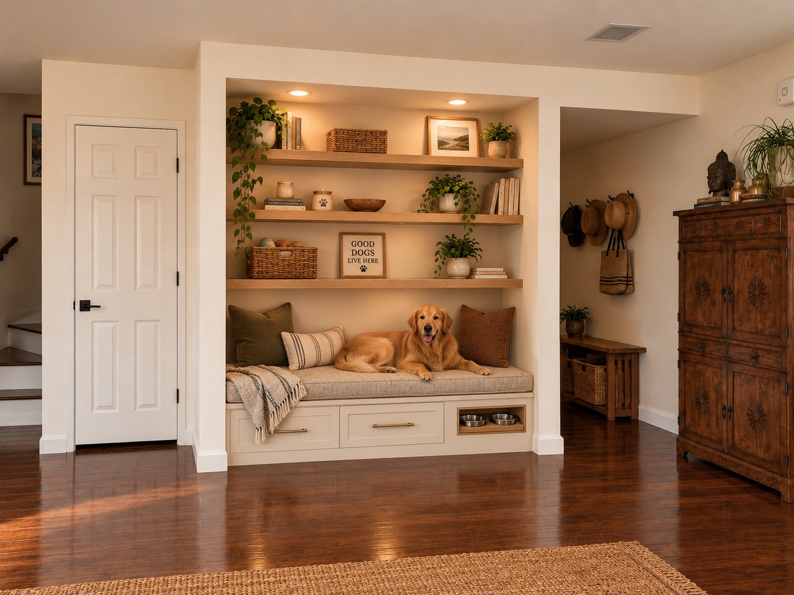

Decided. Picks A2 B2 C2 D1 E1 F2 G2 H1 I1 J2 are locked, with two changes made in conversation: the flat fronts are a 1-1/2 in maple frame around a 3/4 walnut veneer ply panel on the tongue-and-groove bit set, and the top sits 3 in back from the pilaster faces. The CAD, cut list and shop page follow those picks; this page stays as the record of the options.
Everything below is drawn to scale from the numbers you gave me, and every picture redraws as you pick. Pick one card in each group A to J. The elevation and section at the top always show your current combination; each card's small picture shows that option applied to it.
When you are done, press Copy picks in the bar at the bottom and paste the text back to me. Add measurements and notes first if you have them.
Opening 66 in wide, 28 in deep, open above (8 ft ceiling)
Two drawers side by side, full width
Undermount soft-close slides (Blum TANDEM or MOVENTO; group I picks the length)
3/4 in maple top, 3 in cushion
Baseboard removed inside the alcove; the base replaces it
Capped plumbing is in the wall, nothing to clear

The alcove. Baseboard about 4 in on all three walls (coming out); the pilaster faces keep theirs, so a 4 in base lines up with it.

Your concept. Translated here: painted body, slim-shaker inset fronts, brass bars, flush base, one long cushion. The dog cubby and shelves are not in this round.
Front elevation, to scale. Pilasters shown 5 in thick with their baseboard.
Side section through one drawer. Back wall at the left, room at the right.
What these picks give you
Measurements and notes
Change these if your tape says otherwise. The alcove is rarely square, so measure the width at the floor, at 16 in, and at 36 in, at the back wall and at the pilaster faces.
Use the smallest of your readings.
Back wall to the pilaster faces.
3/4 in lets the pilaster baseboard die into the end stiles. 0 puts the fronts flush.
Your picks
This is the text the Copy button puts on your clipboard.